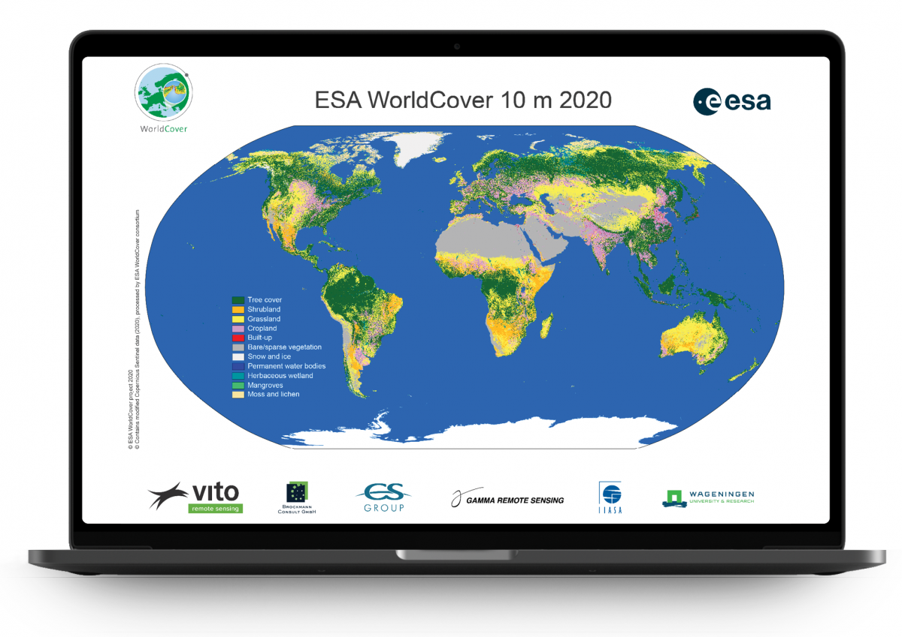

研究背景
2021年10月，欧洲航空局（ESA）发布了2020年的10米土地覆盖数据（WorldCover v100）， 目前在公开可获取的同类型数据产品里具有一定的优势，许多研究领域都有使用该数据集。 近期，他们也发布了最近的2021年的土地覆盖数据（WorldCover v200），因此本次研究简单分析两个数据的变化情况，主要以为北京市为例。

ESA WorldCover
WorldCover provides the first global land cover products for 2020 and 2021 at 10 m resolution , developed and validated in near-real time based on Sentinel-1 and Sentinel-2 data.
A tremendous step forward towards the joint use of Sentinel satellite data for worldwide land cover mapping.more